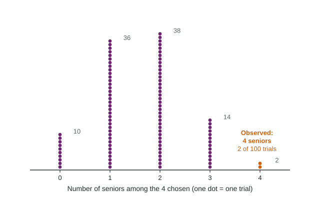

Estimating Probabilities Using Simulation
To estimate a probability by simulation, model the chance process with a device that has the right chances, define one trial and what to record, repeat many trials, and use the share of trials with the result.
Part 1 · Hook
Why this matters
Part 2 · Before you start
What this builds on
Part 3 · Prerequisite check
Quick check before you start
1. Random digits are used to pick 4 of 20 students. A digit pair repeats one already chosen. What should you do?
- Skip it and keep going
- Choose that student twice
- Start over from the beginning
- Stop with fewer students
Show the answer
When picking different people, skip repeats so each student is chosen once.
- Correct: Skip it and keep going:
- Choose that student twice:
- Start over from the beginning:
- Stop with fewer students:
2. A dotplot of 100 values has 12 dots at 7 or more. What share of the values are 7 or more?
- 0.12
- 0.88
- 12
- 0.7
Show the answer
, a relative frequency.
- Correct: 0.12:
- 0.88:
- 12:
- 0.7:
Part 4 · See it
See it first

Part 5 · Step by step
How it works, step by step
- A chance process is hard to analyze with a formulaimitate it with a model that has the same chances (random numbers, a coin, a die)
- Carry out the model once and record the resultone trial: here, the number of seniors among 4 random picks
- Repeat the trial many timesthe share of trials with the result estimates its probability (2 of 100 gave 4 seniors, about 0.02)
- Run more and more trialsby the law of large numbers the estimate settles near the true probability
Part 6 · Key ideas
Key ideas
- A simulation imitates a chance process with a model that has the same chances. Each repetition is a trial.
- The probability of a result is the share of times it happens in a very long run of trials. A simulation estimates it with the share of its trials.
- Describe a simulation so someone else could run it: the device and what each value means, what one trial is, what you record, how many trials.
- The law of large numbers: as the number of trials grows, the share of trials with the result gets closer to the true probability.
- A result that happens rarely in a simulation of a claim gives reason to doubt the claim.
Part 7 · Misconception
A common mistake
The wrong idea: A coin that has landed heads many times in a row is "due" for tails, so early streaks will be balanced out.
What actually happens: The coin has no memory. In the long run the share of heads approaches 0.5 because later flips swamp the early ones, not because tails catch up.
Part 8 · Check yourself
Check yourself
Exam-style questions. Anything you miss goes into your review queue.
Graph
Simulated families collecting 4 prizes
1. Use the simulation to estimate the chance that a family needs 10 or more boxes to get all 4 prizes.
Type a number. A table answer and a calculator answer are both accepted.
Show the answer
Count the dots at 10 or more: 27 of the 100 trials. The estimate is .
- Answer: 0.27
2. What does one dot in the dotplot stand for?
- One box of cereal opened by the student who ran the simulation
- One of the 4 prizes, with its count of boxes stacked above it
- One real family surveyed in a store about how many boxes it bought
- One trial: a simulated family buying boxes until it has all 4 prizes
Show the answer
Each dot is one trial: one simulated family buying boxes until all 4 prizes appear, recorded as the number of boxes.
- One box of cereal opened by the student who ran the simulation: Each dot is a whole run of boxes, not a single box.
- One of the 4 prizes, with its count of boxes stacked above it: The dots stack by number of boxes bought, not by prize.
- One real family surveyed in a store about how many boxes it bought: The families were simulated with random numbers; no one was surveyed.
- Correct: One trial: a simulated family buying boxes until it has all 4 prizes: Right: the result of one repetition of the chance process.
3. How could the student get a more trustworthy estimate of the chance of needing 10 or more boxes?
- Run the same 100 trials again and keep whichever estimate is larger
- Change the prize chances so that 10 boxes is the most common result
- Run many more trials, such as 1,000 simulated families
- Stop each trial after 9 boxes so that the results are closer together
Show the answer
By the law of large numbers, the share of trials with the result settles down near the true value as the number of trials grows.
- Run the same 100 trials again and keep whichever estimate is larger: Choosing the larger estimate builds in a bias toward larger values.
- Change the prize chances so that 10 boxes is the most common result: The model has to match the real packing, one fourth for each prize.
- Correct: Run many more trials, such as 1,000 simulated families: Right: more trials give a steadier estimate.
- Stop each trial after 9 boxes so that the results are closer together: Stopping early changes what is being simulated and hides the long runs.
Diagram
Simulating free throws with random digits
4. Which assignment of digits models one free throw correctly?
- Digits 0 to 6 mean a miss; digits 7 to 9 mean a make
- Digits 0 to 7 mean a make; digits 8 and 9 mean a miss
- Digits 0 to 4 mean a make; digits 5 to 9 mean a miss
- Digits 0 to 6 mean a make; digits 7 to 9 mean a miss
Show the answer
Seven of the ten digits must mean a make: 0 to 6 is 7 digits (70%), 7 to 9 is 3 digits (30%).
- Digits 0 to 6 mean a miss; digits 7 to 9 mean a make: That reverses the plan: makes get 3 of the 10 digits, a 30% chance.
- Digits 0 to 7 mean a make; digits 8 and 9 mean a miss: That is 8 of the 10 digits, an 80% chance of a make.
- Digits 0 to 4 mean a make; digits 5 to 9 mean a miss: That is 5 of the 10 digits, a 50% chance, not 70%.
- Correct: Digits 0 to 6 mean a make; digits 7 to 9 mean a miss: Right: 7 of the 10 equally common digits, 70%.
5. In this simulation, what is one trial?
- A group of 10 random digits, recording how many of them are makes
- One random digit, recording whether it is a make or a miss
- A group of 9 random digits, since the question asks about 9 makes
- A group of 70 random digits, one for each percent of her makes
Show the answer
One trial must copy the whole situation once: 10 free throws, so 10 random digits, recording the number of makes.
- Correct: A group of 10 random digits, recording how many of them are makes: Right: one trial imitates the 10 free throws once.
- One random digit, recording whether it is a make or a miss: One digit is one shot; the question is about 10 shots together.
- A group of 9 random digits, since the question asks about 9 makes: The player takes 10 shots; 9 is the result being counted.
- A group of 70 random digits, one for each percent of her makes: The 70% decides which digits are makes, not how many digits to use.
6. A fair coin lands heads in 13 of its first 20 flips (0.65). After 2,000 flips, the share of heads is most likely to be
- close to 0.5
- close to 0.65
- below 0.5, to balance the early heads
- impossible to guess from what is known
Show the answer
The law of large numbers: in many trials the share of heads settles near the true value, 0.5. Early streaks are not "made up for"; they are swamped by later flips.
- Correct: close to 0.5: Right: the long-run share approaches the true chance.
- close to 0.65: The first 20 flips carry little weight among 2,000.
- below 0.5, to balance the early heads: The coin does not remember; the early surplus is diluted, not reversed.
- impossible to guess from what is known: For a fair coin, the long-run share is near 0.5.
Part 9 · Summary
Summary
Part 10 · Up next
What comes next
Part 11 · Connections